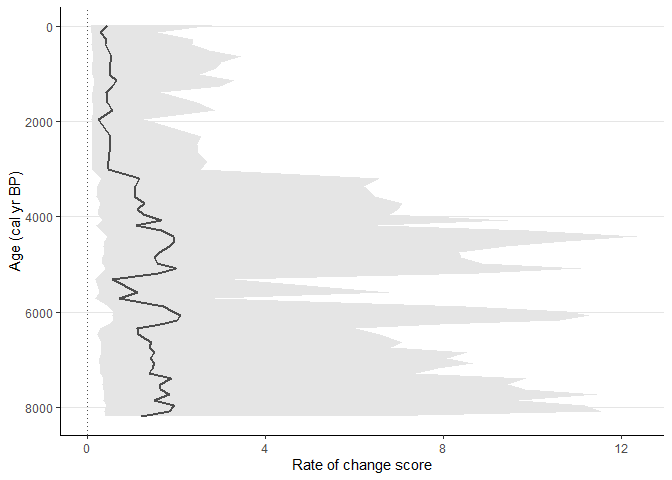

Current version: 1.2.2
What is new in the package? See NEWS
Package logo
The original sketch for logo was done by Vanesa Surtkova. Check her out!
Description
RRatepol is an R package for estimating rate of change (RoC) from community data in time series.
RRatepol is written as an R package and includes a range of possible settings including a novel method to evaluate RoC in a single stratigraphical sequence using assemblage data and age uncertainties for each level. There are multiple built-in dissimilarity coefficients (dissimilarity_coefficient) for different types of assemblage data, and various levels of data smoothing that can be applied depending on the type and variance of the data. In addition, RRatepol can use randomisation, accompanied by use of age uncertainties of each level and taxon standardisation to detect RoC patterns in datasets with high data noise or variability (i.e. numerous rapid changes in composition or sedimentation rates).
Installing package
devtools::install_github("HOPE-UIB-BIO/R-Ratepol-package")Cite as
citation(package = "RRatepol")Ondřej Mottl, John-Arvid Grytnes, Alistair W.R. Seddon, Manuel J. Steinbauer, Kuber P. Bhatta, Vivian A. Felde, Suzette G.A. Flantua, H. John B. Birks. Rate-of-change analysis in palaeoecology revisited: a new approach Review of Palaeobotany and Palynology 293, doi: 
Package website
More detailed information can be found on RRatepol package website
This include description of the individual steps for RoC estimation Package Description
FOSSILPOL
If you are interested in estimating rate of change for several records, please see FOSSILPOL, an R-based modular workflow to process multiple fossil pollen records to create a comprehensive, standardized dataset compilation, ready for multi-record and multi-proxy analyses at various spatial and temporal scales.
Examples
Workflow
Example of workflow showing full strength of RRatepol package, with as step by step guidance starting from downloading dataset from Neotoma, building age-depth models, to estimating rate-of-change using age uncertainty. Example of full workflow
APD R-Ratepol workshop
For additional examples of RRatepol setting, see Materials for R-Ratepol workshop with an African focus (APD data users)
OCCR R-Ratepol workshop
For examples using other data types than fosssil pollen, see Oeschger Centre for Climate Change Research Workshop for workflows using geochemistry and XRF data.
Build-in example
Pollen data from four European sequences the Neotoma database (Goring et al., 2015) were obtained. Taxa were standardised to the taxonomically highest pollen morphotype (Level = MHVar2) using the pollen harmonisation table in Giesecke et al. (2019).
Age-depth models were developed using the pre-selected radiometric control points provided in Giesecke et al. (2014) and calibrated the radiocarbon dates using the IntCal13 Northern Hemisphere calibration curve (Reimer et al., 2013). For each sequence, an age-depth model was constructed using the Bchron R package (Haslett & Parnell, 2008) to generate 1000 possible age predictions (i.e. age uncertainties) for all levels. We calculated the median of all the uncertainties for each level to give the most probable age (default age) in calibrated years before present (cal yr BP, where 0 = 1950 CE).
In each sequence, we excluded all levels that contained less than 150 pollen grain counts of the terrestrial taxa, and all levels beyond a 3000-years extrapolation of the oldest chronological control point. In addition, we excluded all levels with an age older than 8500 cal yr BP to focus on the period of most substantial human impact.
example_data <-
RRatepol::example_data
dplyr::glimpse(example_data)
#> Rows: 4
#> Columns: 7
#> $ dataset_id <chr> "4012", "40951", "45314", "17334"
#> $ collection_handle <chr> "DALLICAN", "STEERMOS", "KILOALA", "GL"
#> $ lat <dbl> 60.38736, 47.80567, 67.96611, 53.00735
#> $ long <dbl> -1.096480, 8.200150, 20.460278, -6.348035
#> $ pollen_data <list> [<tbl_df[63 x 51]>], [<tbl_df[273 x 104]>], [<tbl_df…
#> $ sample_age <named list> [<data.frame[63 x 3]>], [<data.frame[273 x 3]>], [<d…
#> $ age_uncertainty <named list> <<matrix[1000 x 63]>>, <<matrix[1000 x 273]>>, <<mat…
example_data %>%
ggplot2::ggplot(
ggplot2::aes(
x = long,
y = lat
)
) +
ggplot2::borders(
fill = "gray90",
colour = NA
) +
ggplot2::geom_point(
shape = 0,
size = 2
) +
ggplot2::geom_point(
shape = 20,
size = 2
) +
ggplot2::coord_quickmap(
xlim = c(-10, 25),
ylim = c(47, 70)
) +
ggplot2::labs(
x = "Longitude",
y = "Latitude"
) +
ggplot2::theme_classic()
Example 1
Estimate RoC values for Dallican Water site using Age-weighed smoothing of the data and Chord dissimilarity coefficient. Pollen data will not standardised to a certain pollen count and age uncertainties from Bchron will not be used.
sequence_01 <-
RRatepol::estimate_roc(
data_source_community = example_data$pollen_data[[1]],
data_source_age = example_data$sample_age[[1]],
smooth_method = "shep",
dissimilarity_coefficient = "chisq",
working_units = "levels"
)
#> #----------------------------------------------------------#
#> ℹ RRatepol started 2023-11-24 11:35:34
#> #----------------------------------------------------------#
#> ℹ RoC will be estimated between individual subsequent levels
#> ℹ 'time_standardisation' = 500 : RoC values will be reported as disimilarity per 500 years.
#> #----------------------------------------------------------#
#> ℹ RRatepol finished 2023-11-24 11:35:35 taking 0.66 secs
#> #----------------------------------------------------------#
RRatepol::plot_roc(
data_source = sequence_01
)
Example 2
Now try to standardise pollen data in each sample to a maximum of 150 pollen grains and use age uncertainties from age-depth model. Process will be repeated 1000 times on multiple cores using parallel computation. This will produce error wrapper showing 95th percent quantile.
sequence_02 <-
RRatepol::estimate_roc(
data_source_community = example_data$pollen_data[[1]],
data_source_age = example_data$sample_age[[1]],
age_uncertainty = example_data$age_uncertainty[[1]],
smooth_method = "shep",
dissimilarity_coefficient = "chisq",
working_units = "levels",
standardise = TRUE,
n_individuals = 150,
rand = 1000,
use_parallel = TRUE
)
#> #----------------------------------------------------------#
#> ℹ RRatepol started 2023-11-24 11:35:35
#> #----------------------------------------------------------#
#> ℹ 'age_uncertainty' will be used for in the RoC estimation
#> ℹ RoC will be estimated between individual subsequent levels
#> ℹ 'time_standardisation' = 500 : RoC values will be reported as disimilarity per 500 years.
#> ℹ Data will be standardise in each Working unit to 150 or the lowest number detected in dataset
#> #----------------------------------------------------------#
#> ℹ RRatepol finished 2023-11-24 11:35:49 taking 13.53 secs
#> #----------------------------------------------------------#
RRatepol::plot_roc(
data_source = sequence_02
)
Example 3
Use Binning with the mowing window approach with bin_size = 500 and number_of_shifts = 5.
sequence_03 <-
RRatepol::estimate_roc(
data_source_community = example_data$pollen_data[[1]],
data_source_age = example_data$sample_age[[1]],
age_uncertainty = example_data$age_uncertainty[[1]],
smooth_method = "shep",
dissimilarity_coefficient = "chisq",
working_units = "MW",
bin_size = 500,
number_of_shifts = 5,
standardise = TRUE,
n_individuals = 150,
rand = 1000,
use_parallel = TRUE
)
#> #----------------------------------------------------------#
#> ℹ RRatepol started 2023-11-24 11:35:49
#> #----------------------------------------------------------#
#> ℹ 'age_uncertainty' will be used for in the RoC estimation
#> ℹ RoC will be estimated using 'binning with the mowing window' of 500 yr time bin over 5 number of window shifts
#> ℹ Sample will randomly selected for each bin
#> ℹ 'time_standardisation' = 500 : RoC values will be reported as disimilarity per 500 years.
#> ℹ Data will be standardise in each Working unit to 150 or the lowest number detected in dataset
#> #----------------------------------------------------------#
#> ℹ RRatepol finished 2023-11-24 11:36:17 taking 27.69 secs
#> #----------------------------------------------------------#
RRatepol::plot_roc(
data_source = sequence_03
)
Example 4
Detect the peak points using trend_non_linear method.
sequence_03_with_peaks <-
RRatepol::detect_peak_points(
data_source = sequence_03,
sel_method = "trend_non_linear"
)
RRatepol::plot_roc(
data_source = sequence_03_with_peaks,
peaks = TRUE,
trend = "trend_non_linear"
)